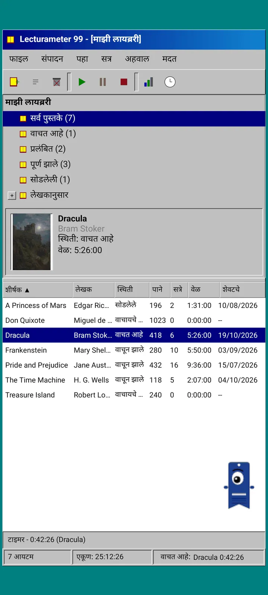
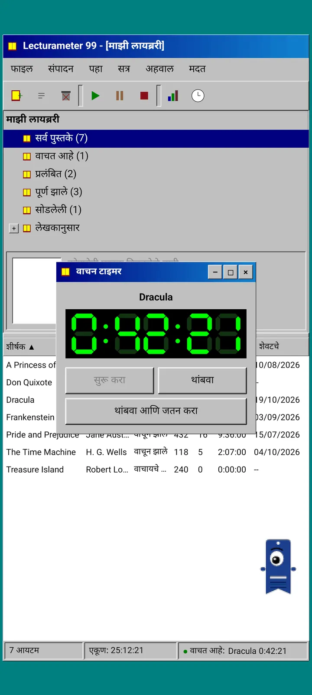
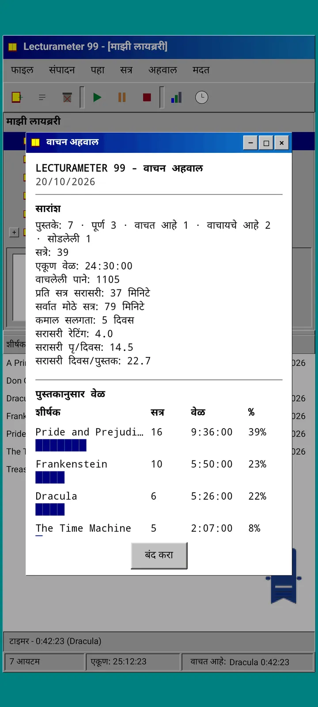
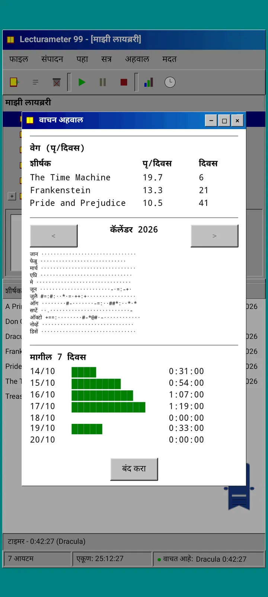
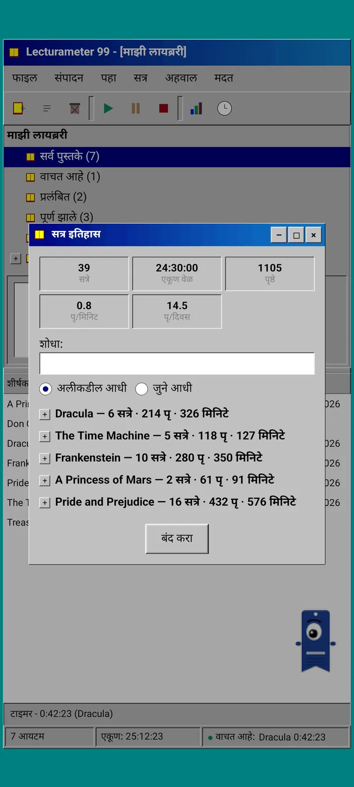
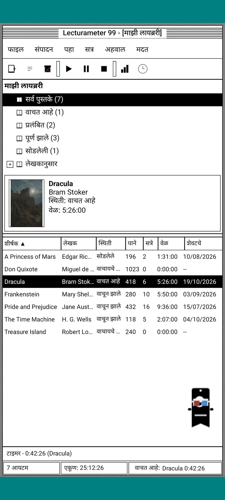
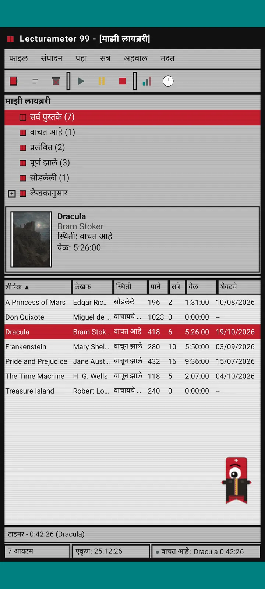
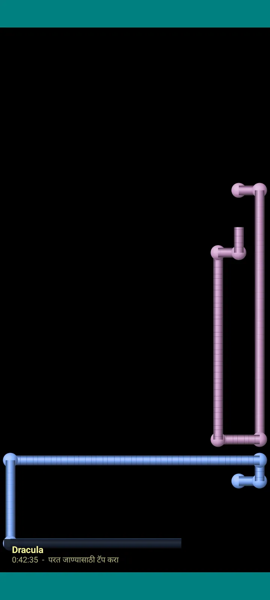

Lecturameter 99
Lecturameter, जणू तुम्ही 1999 मध्ये सीडी-रॉमवरून इन्स्टॉल केले असावे. विंडो, मेनू आणि टेबलसह स्वतंत्र अॅप, जे तुमचे खरे बॅकअप उघडते.
पूर्वी Lecturameter 1999. स्टोअर अजूनही ते त्या नावाने दाखवू शकतात: हेच अॅप आहे.

हे काय आहे
तुमच्या फोनवर चालणारा नव्वदीच्या उत्तरार्धातील डेस्कटॉप प्रोग्राम. निळसर-हिरव्या डेस्कटॉपवर एक खिडकी, मेनू बार, टूलबार, फोल्डर ट्री, दाट तक्ता आणि स्टेटस बार.
- लायब्ररी ट्री: सर्व पुस्तके, वाचत आहे, प्रलंबित, पूर्ण झाले, सोडून दिलेले आणि लेखकानुसार
- शीर्षक, लेखक, स्थिती, पाने, सत्रे, वेळ आणि शेवटचे वाचन असलेला तक्ता. क्रमवारी लावण्यासाठी स्तंभाच्या शीर्षकावर टॅप करा
- खरा पुस्तक शोध, Lecturameter वापरत असलेल्याच कॅटलॉगने
- Lecturameter बॅकअप आणि Goodreads CSV आयात आणि एक्सपोर्ट करते. तुमचा डेटा काहीही न गमावता आत-बाहेर जातो

हे का आहे
एक प्रयोग: खऱ्या ॲपला हात न लावता, पूर्णपणे वेगळ्या डिझाइन तत्त्वांवर Lecturameter ची कल्पना सुरुवातीपासून पुन्हा उभी करणे. सगळ्या पुनर्रचनांमध्ये 1999 ची मला सर्वात जास्त आवडली, म्हणून मजेशीर सराव म्हणून ती पूर्ण केली आणि तिचा संपूर्ण क्लायंट बनवला. ती मुद्दाम Lecturameter पेक्षा सोपी आहे: हा एक प्रयोग आहे आणि तत्त्वतः यावर पुढे काम होणार नाही.
- हिरव्या LCD डिस्प्लेसह तरंगत्या खिडकीत स्टॉपवॉच. ते हलते, टास्कबारमध्ये लहान होते आणि स्टेटस बारमध्ये मोजत राहते
- थांबवल्यावर, सेशन सेव्ह डायलॉग तुम्हाला ते पाने, टक्केवारी किंवा फक्त वेळेनुसार नोंदवू देतो, आणि Lecturameter प्रमाणेच तुमची गती मोजतो
- जतन केलेली सत्रे ही Lecturameter चीच सत्रे आहेत: Lecturameter 99 चा बॅकअप एक्सपोर्ट करून Lecturameter मध्ये आयात केल्यास ती आधुनिक ॲपमध्ये परत येतात.

वाचन अहवाल
आकडेवारी म्हणजे मोनोस्पेस मजकुरातील छापील अहवाल: सारांश, ब्लॉक बारसह प्रत्येक पुस्तकाचा वेळ आणि दिवसाला पानांमध्ये गती.

वर्षाचे कॅलेंडर
वर्षातील प्रत्येक दिवस तुम्ही वाचलेल्या पानांनुसार एका अक्षराने काढला जातो, खाली शेवटचे सात दिवस ब्लॉक बारमध्ये.

सत्र इतिहास
अधिक आणि उणे चिन्हांच्या ट्रीमध्ये पुस्तकानुसार गटबद्ध सत्रे, वर पाच आकडे: सत्रे, एकूण वेळ, पाने, दर मिनिटाची पाने आणि दररोजची पाने.
थीम
Classic 98 मोफत आणि डिफॉल्ट आहे. पॅक Android वर आणखी सहा आणि iPhone वर चार जोडतो, प्रत्येकाची स्वतःची पार्श्वभूमी आणि स्वतःचे आवाज.

दृश्य मेनूमधून निवडा
पहा, थीम... थीम असलेली विंडो उघडते: Android वर सात आणि iPhone वर पाच. बदल सर्व विंडो, टायमर आणि Pagi पर्यंत एकाच वेळी पोहोचतो.
- Classic 98, मोफत आणि डीफॉल्ट: करड्या खिडक्या, गडद निळे शीर्षक बार आणि निळसर-हिरवा डेस्कटॉप
- थीम पॅक: 1984, Gumdrop, Memory, Towers, Core आणि 8-bit. iPhone वर 1984 आणि Gumdrop शिवाय
- प्रत्येक थीमसोबत स्वतःची डेस्कटॉप पार्श्वभूमी आणि टॅप, खिडक्या व स्टॉपवॉचसाठी स्वतःचे आवाज येतात
- तुम्ही शांततेत वाचत असाल तर दृश्य, थीमचे आवाज यातून आवाज बंद करता येतात

Classic 98
करड्या खिडक्या, गडद निळे शीर्षक बार आणि निळसर-हिरवा डेस्कटॉप. मोफत, ॲप याच थीमने उघडते.

1984
ठिपक्यांचे नमुने आणि चौकोनी विंडो असलेला एक-बिट कृष्ण-धवल डेस्कटॉप. फक्त Android.

Gumdrop
पारदर्शक रंगीत प्लास्टिक, गोल बटणे आणि पार्श्वभूमीत पट्टे. फक्त Android.

Memory
नव्वदच्या दशकातील डिस्क कन्सोलचे मेनू, गडद निळ्या रंगात.

Towers
नव्वदच्या दशकातील आणखी एक डिस्क कन्सोल, रात्रीचा निळा रंग आणि फिकट निळ्या रेषा.

Core
काळा आणि हिरवा कन्सोल, कधीही बंद न होणाऱ्या स्क्रीनसारखा.

8-bit
जाड पिक्सेल, थोडे रंग आणि ठोकळेदार अक्षरे.

पैसे देण्यापूर्वी वापरून पहा
लॉक केलेल्या थीमवर टॅप करा आणि संपूर्ण ॲप त्या थीममध्ये बदलते. खरेदी न करता बंद केल्यास आधीची थीम परत येते.
स्क्रीनसेव्हर
ते फक्त स्टॉपवॉच सुरू असताना आणि तुम्ही फोनला हात लावला नसताना दिसतात. ते 1, 3 किंवा 5 मिनिटे थांबतात, किंवा कधीच नाही. एका टॅपने तुम्ही परत येता आणि स्टॉपवॉच मोजत राहते.

Flying books
काळ्या स्क्रीनवर मुखपृष्ठे फडफडवत उडणारी पिक्सेल पुस्तके.

Letter field
अनेक वर्णमालांमधील अक्षरे ताऱ्यांच्या आकाशासारखी तरंगत जातात.

Page pipes
पानांपासून बनलेले पाईप, स्क्रीन भरेपर्यंत स्वतःच रेखाटले जातात.

Bouncing Pagi
स्क्रीनच्या कडांवरून उसळणारा Pagi.

Reading clock
सत्राचा वेळ मोठ्या LCD अंकांत.

Pagi 99 आणि त्याचे पोशाख
Pagi 1999 मध्येही प्रवास करतो: पिक्सेल रूपात आणि स्क्रीनवर मोकळा, त्या काळच्या ऑफिस असिस्टंटसारखा. तुम्ही त्याला ओढता, टॅप केल्यावर तो बोलतो आणि टिप्स पिवळ्या फुग्यांत दाखवतो. त्याच्याकडे आठ पोशाख आहेत, पहा, Pagi चा पोशाख... मधून निवडा, आणि पैसे देण्यापूर्वी घालून पाहू शकता.
- कॅसेट प्लेयर
- उलटी टोपी
- 3D चष्मा
- निऑन सनग्लासेस
- हातात फ्लॉपी डिस्क
- लेदर जॅकेट
- पॉकेट पेट
- कार्डबोर्डचा मुकुट
स्टोअर
वाचनाची नोंद ठेवण्यासाठी ॲप मोफत आणि पूर्ण आहे. तुम्ही जे खरेदी करू शकता ते फक्त देखावा बदलते.
संपूर्ण ॲप, कोणत्याही वेळमर्यादेशिवाय.
- लायब्ररी, शोध, स्टॉपवॉच आणि सत्रे
- वाचन अहवाल आणि सत्रांचा इतिहास
- पाने, टक्केवारी किंवा वेळेनुसार हाताने नोंदवलेली आणि जतन केलेली सेशन
- आजची टिप आणि मदत मेनूमधून अभिप्राय पाठवणे
- Lecturameter बॅकअप आणि Goodreads CSV, आयात आणि एक्सपोर्ट दोन्ही
- Classic 98 थीम आणि Pagi 99
- खाते नाही, जाहिराती नाहीत
एकदाच पैसे, सबस्क्रिप्शन नाही.
- थीम पॅक, €3.49: पार्श्वभूमी आणि आवाजांसह 6 थीम, तसेच स्क्रीनसेव्हर
- स्क्रीनसेव्हर, €1.99: 5 स्क्रीनसेव्हर
- Pagi च्या वेशभूषा, €1.99: 8 वेशभूषा
- संपूर्ण 1999, €4.49: थीम, स्क्रीनसेव्हर आणि वेशभूषा
फक्त Android: मदत मेनूमध्ये पर्यायी टिप्स, तुम्हाला मला कॉफी पाजायची असेल तर.
iPhone वर टिप्स नाहीत आणि 1984 किंवा Gumdrop थीम नाहीत (Apple परवानगी देत नाही); बाकी सर्व समान आहे.
पैसे देण्यापूर्वी थीम आणि वेशभूषा थेट वापरून पाहता येतात. खरेदी न करता बंद केल्यास तुमच्याकडे जे होते ते परत येते.
Lecturameter च्या तुलनेत काय वेगळे आहे
Lecturameter सारखेच
- तोच डेटा: पुस्तके, सत्रे, स्थिती, स्कोअर आणि नोट्स. बॅकअप फाइल दोन्ही ॲप्समध्ये सारखीच आहे.
- शीर्षक किंवा लेखकानुसार पुस्तक शोध.
- खरे स्टॉपवॉच: ते पार्श्वभूमीत आणि ॲप बंद केले तरीही मोजत राहते.
- खाते नाही आणि जाहिराती नाहीत. इंटरनेट फक्त पुस्तके शोधण्यासाठी आणि, चालू ठेवल्यास, सुटसुटीत-ओळख वापर आकडेवारी व क्रॅश अहवालांसाठी वापरते (मदत, गोपनीयतामध्ये बंद करता येते).
- 50 भाषांमध्ये उपलब्ध.
फक्त 1999 आवृत्तीत
- 1999 च्या डेस्कटॉपसारखा इंटरफेस. Material नाही.
- खऱ्या विंडोज: तुम्ही त्या ओढता, लहान करता आणि क्रॉसने बंद करता.
- अक्षरांनी काढलेल्या कॅलेंडरसह मजकूर स्वरूपातील वाचन अहवाल.
- दीर्घ दाबल्यावर संदर्भ मेनू, आणि कीबोर्ड जोडल्यास कीबोर्ड शॉर्टकट.
- टिप्सच्या फुग्यांसह पिक्सेल स्वरूपातील Pagi 99.
- स्वतःची पार्श्वभूमी आणि आवाज असलेल्या ऐच्छिक थीम, स्टॉपवॉच सुरू असताना स्क्रीनसेव्हर आणि Pagi साठी वेशभूषा.
जे मुद्दाम वगळले आहे
- Pro नाही आणि सबस्क्रिप्शन नाही. वाचनाची नोंद ठेवणे सर्व मोफत आहे, स्टोअर फक्त देखावा विकते.
- आव्हाने, Bingo, वार्षिक Wrapped किंवा विजेट्स नाहीत.
- इमर्सिव्ह सत्र, वातावरणाचे आवाज किंवा गुगल ड्राइव्ह बॅकअप नाही. बॅकअप फाइल म्हणून जतन होतो.
मिळवा
Lecturameter 99 मोफत आहे आणि iPhone व Android साठी उपलब्ध आहे.
ब्लॉग पोस्ट वाचा ते कुठून आले आणि काय अपेक्षित आहे ते पाहण्यासाठी.